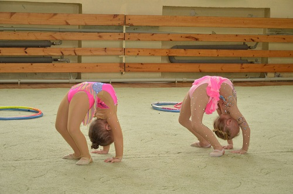

Как растянуть ребенка самостоятельно?

МОСТИК
Наверное, не раз ваш карапуз самостоятельно пытался стать на мостик. Еще, будучи совсем маленькими, они часто выгибаются, делая первые смешные пародии на мостик. Как же правильно делать мостики? Правильный мост — когда пальчики рук максимально близко находятся от пяточек ног (желательно касание), ноги на ширине плеч (можно немного шире). Мост получается красивый, высокий.
Упражнения для развития гибкости и подкачки мышц спины у ребёнка:
1. Стоя на коленях делаем прогиб назад — руки ставим на пол. Повторяем упражнение 10 — 15 раз.
2. Лёжа на животе берём руками стопы ног, согнутые в коленях и делаем «корзиночку» или «качельку». Тянем вверх ноги и руки и «раскачиваемся» как качелька. Если у ребёнка не получается раскачаться — помогите ему немного.
3. Ребёнок лежит на животике, ноги вместе. Вы немного придерживаете ему ноги в районе стоп. Малыш пытается приподнять спинку, руки либо за головой согнутые в локтях, либо вытянутые впереди, а при прогибе руки прижать к ушам. Это упражнение можно повторять пока малыш не устанет (10 — 20 раз), оно не только на гибкость, но и на укрепление мышц спины. Это упражнение можно делать и возле шведской стенки: лежа на животе, спиной к стенке, закрепляете стопы под самую нижнюю планочку и делаете упражнение прогиб назад, а в руки (вытянутые) можно взять мячик — это ещё больше усложнит упражнение.
4. Ребёнок лежит на животике, ноги вместе и делает прогиб назад. Сперва за плечики вы немного пружиня, наклоняете спинку к ногам, а затем берёте его руки (при этом придерживаете ноги, чтобы они не разъезжались в стороны) и тяните их к ногам (очень аккуратно).
5. Ребёнок лёжа на животике наклоняет назад спинку и сгибает ноги в коленях, ноги касаются головы малыша.
6. Ребёнок в положении стоя возле шведской стенки, на расстоянии 50 — 60 см от неё. Руки кладёт на шведскую стенку и делает прогиб спины.
7. Положения — вися на шведской стенке (лицом к стенке) отрываем от стенки ноги. Упражнение повторить 10 — 15 раз. Чем больше отрываются ноги от шведской стенки, тем больше включаются в работу мышцы спины, тем больше будет эффект.
8. Упражнение «лодочка» — ребёнок лежит на животике и поднимает одновременно руки и ноги. Повторить это упражнение 10 — 15 раз. Это хорошее упражнение для подкачки мышц спины.
9. Ребёнок стоит к вам лицом, ноги на ширине плеч — вы берёте его под спинку, малыш делает наклон назад — а вы делаете пружинки — опуская и немного приподнимая его спинку. Делайте 5 — 10 пружинок и поднимаете спинку полностью в вертикальное положении. Повторите это упражнение 3 — 4 раза, это своего рода разогревающее упражнение для спины.
10. Очень полезное упражнение для гибкости в самом раннем возрасте — это кошечка. Стоя на коленках на четвереньках (руки на полу) делаете изгиб спины в низ (голова тянется к попе) — «добрая кошечка», затем делаете изгиб спины в вверх (голова тянется к животику, образуется как бы бугорок ) — «злая кошечка». В игровой форме это упражнение — зарядка проходит на ура даже с самыми маленькими деками, которые ещё только умеют ползать.
Ждите следующих интересных статей.